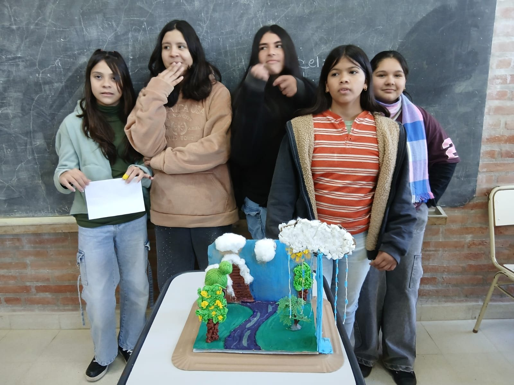

{kind=link}
{kind=link}
{kind=link}
{kind=link}
{kind=link}
{kind=link}
{kind=link}
🔬
Ciencias Naturales
Experiencias, trabajos de laboratorio, proyectos ambientales, investigación escolar y salidas educativas.
Ver producción publicadaEspacio institucional en crecimiento para visibilizar lo que estudiantes, docentes y áreas desarrollan día a día en la escuela.
Este módulo está pensado para crecer durante todo el ciclo lectivo con fotografías, videos, producciones, salidas educativas, experiencias áulicas, proyectos por curso y materiales compartidos por coordinadores de área.
Los estudiantes investigaron las etapas del ciclo del agua, construyeron una maqueta y prepararon una explicación audiovisual para comunicar lo aprendido.

La propuesta articuló investigación escolar, representación mediante una maqueta, organización grupal y comunicación oral. Las imágenes documentan tanto el proceso de elaboración como el producto final.
Presentación realizada por los estudiantes de 2.º Año B.
Estructura preparada para incorporar progresivamente evidencias de aprendizaje y registros de actividades.
Experiencias, trabajos de laboratorio, proyectos ambientales, investigación escolar y salidas educativas.
Ver producción publicadaProducciones escritas, lecturas, debates, investigaciones, efemérides y proyectos comunicacionales.
En construcciónDesafíos, resolución de problemas, actividades aplicadas, producciones gráficas y recursos de apoyo.
En construcciónProducciones expresivas, actividades corporales, muestras, canciones, juegos y experiencias compartidas.
En construcciónProducciones digitales, ciudadanía digital, inteligencia artificial, recursos multimedia y proyectos tecnológicos.
En construcciónActividades de acompañamiento, convivencia escolar, participación estudiantil y construcción de vínculos.
En construcciónRegistros de clases, actos, talleres, salidas educativas, producciones grupales y momentos significativos.
Trabajos, afiches, documentos, videos, audios, presentaciones y recursos creados por los estudiantes.
Guías, consignas, recursos para clases híbridas, propuestas de aula invertida y actividades domiciliarias.
Cada publicación ayudará a construir un registro institucional de experiencias, aprendizajes y proyectos.
Docentes o coordinadores comparten fotos, videos, producciones o relatos breves.
El material se organiza por área, curso, fecha y tipo de actividad.
Se incorpora al portal en el bloque correspondiente, con descripción institucional breve.
El sitio conserva la memoria de lo trabajado durante el año escolar.